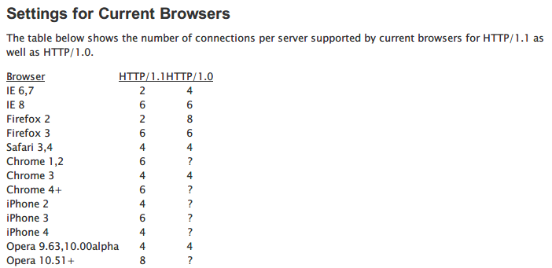
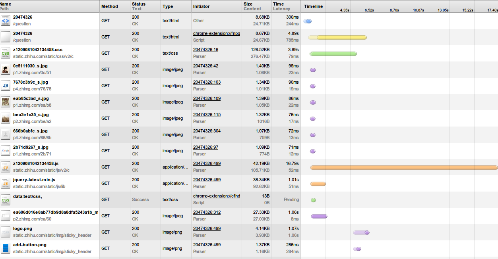
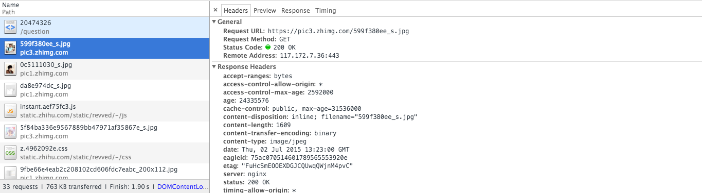
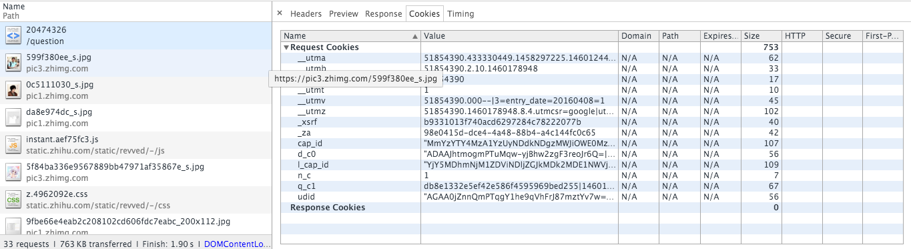
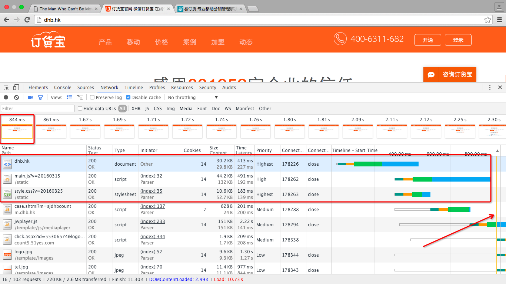
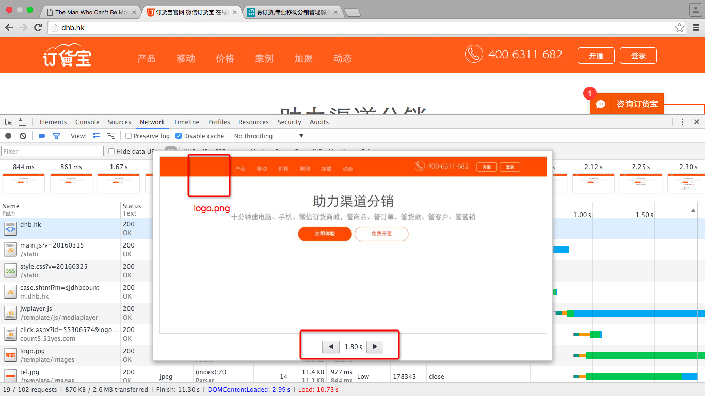
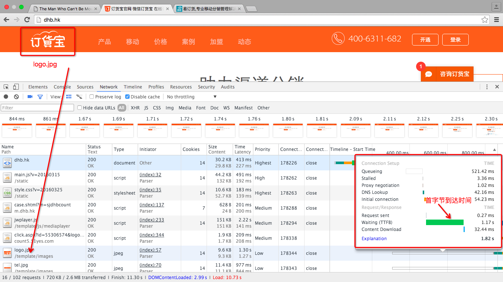

Chrome DevTools tips and tricks
Elements
- 选择元素按H可以显示和隐藏当前元素，省去了手动添加(display:none;)操作
- 为元素添加Subtree modification, Attribute modification, Node removal监听
- Event Listeners 可以查看当前选中元素有事件，可以绑定到祖先元素上的事件，并且可以查看事件的代码
- Toggle Element state可以查看当前元素的:active, :focus, :hover, :visited样式
- Ctrl+F支持子节点查找 form input
Console
- $0 => 选择当前选中的元素， 右键可以修改
- $(‘img’) => document.querySelector
- $$(‘img’) ＝> document.querySelectorAll
- console.table([{a:1, b:2, c:3}, {a:”foo”, b:false, c:undefined}]);
- dir($0)
debug(functionName) && undebug 控制台中打断点
profile(“My profile”) && profileEnd(“My profile”) 用于比较耗费CPU的操作
Sources
- 可以在代码中添加debugger; 程序在执行时会在此断点
- 动态加载的JS代码调试， 代码头部加入 // @sourceURL=example.js 通知DevTools
- Ctrl + P可以查找任意文件
- Ctrl + P + : + 行号跳转到文件相应行
- Ctrl+Shift+O可以跳转到任意方法
- 左下角的{}可以格式化压缩的JS,CSS方便查看代码调试
- 添加断点调试JS, 添加条件断点
- 单步跳过，进入，跳出方法, black box, 跳过jquery, angular的源代码，只在我们自己写的代码中调试
- 添加表达式
- 函数的调用栈
Network
- Filter可以多选
- size/content可以进行优化判断 size:文件传输大小, content:实际大小; size=Gzip(文件大小)+response header的大小
- 非二进制文件的size等于content说明未开启Gzip, 需要优化
- size大于content, 一般是小图片，可能20B大小，size中还包含了response_headers的大小，所以切图的时候，可以把多个小图片做成一张雪碧图，一是减少网络请求，二是可以减少过多response header的传输浪费
- time/latency => 总时间/等待时间 开始时间到TTFB(首字节加载时间)就是等待时间
- initator 资源是由谁请求的， 解释器或者自定义的JS，由JS发起的会存在一些延迟
- HAR(HTTP Archive)前后台开发人员协作优化性能问题 http://ericduran.github.io/chromeHAR/
- DOMContent event Fire（解释完当前页面）蓝线， Load Event Fire（加载完所有资源）红线
浏览器并发请求数
为了复用已存在在的连接，浏览器对同一域名的并发请求是有限的, 以下是各种浏览器的并发数量

zhihu.com的网络请求截屏

如图，有的请求会持续很长时间，如果把 img, css, js… 都放到 http://zhihu.com 一个域名下面，其他请求就迟迟无法完成，浏览者看来就是『卡住了』。而把图片放到 http://zhimg.com 之后，css和图片就可以并发请求了。知乎使用了pic1.zhimg.com | pic2.zhimg.com | pic3.zhimg.com | pic3.zhimg.com
而且这4个域名是cookie free的
可以参考下图


Capture Filmstrip 以订货宝官网为例

844ms呈现出来的首屏，这时html+js+css下载完成
DOM+Javascript+CSSOM => Render Tree

1.80s的首屏截图， 此时订货宝的Logo还未加载出来，为什么？？

仔细看logo.png的网络请求， Queueing: 521ms，TTFB: 1.17s， Content Download: 32ms
如何优化Queueing， Stalled
- 资源优先级 图片的优先级一般是低于html, css, js的，可以在Network的选项卡里调出优先级一列
- 同一域名网络请求并发数 chrome 6个
排队时间高就是因为并发的6个链接正在处理优先级高的资源，要等到优先级高的资源处理完了，在复用这些链接请求优先级更低的资源
这个时候我们将图片换到另外的域名下，在同一优先级的图片下面，logo.png是会优先排队的，这样就可以避免排队时间的过多的消耗，
鱼与熊掌不可兼得，放到另外的域名下，DNS查询也是会增加消耗的，一般2～4个为宜
如何优化TTFB
TTFB 是一个可以优化的点，利用CDN, 让内容距离用户更近，更快的服务器响应
如何优化Content Download
减小内容大小；
特别是在首次加载，TCP连接在开始是很慢的，window size是很小的，~14kb, 超过14kb的内容需要另外的TCP包进行传输，会增加一个round trip time(来回时间)，在来回时间很长的情况下，会拖慢首次加载的速度
throttling
切换网络限速
custom throttling
自定义网络限速
Chrome Canary: request block to diagnose which resources slowdown the first meaningful screen
Timeline
蓝线表示DOMContentLoaded event
绿线表示首次绘制页面
红线表示load event.
Profiles
网页的性能问题，JS的性能问题
Resource
资源，cookie, localstorage
Audits
评审网站，cache file, remove unuse css
pagespeed plugin
optimize image
pagespeed 的nginx和Apache扩展
前面提到的TCP slow start的问题
我们应该优化关键帧，保证关键帧首先呈现给用户，关键的css, js应该使用内敛的方式放在html中